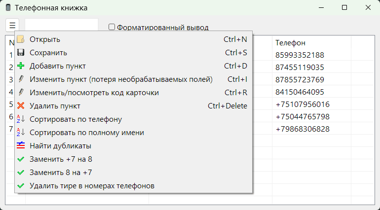

PhoneBookEditor
Назначение
Просмотр и редактирование файлов vcf сохранённых телефоном.

На данный момент позволяет добавлять, изменять, сохранять. Перед изменением обязательно сделать копию. Пункт меню "Изменить пункт (потеря необрабатываемых полей)" не поддерживаются некоторые поля (вторые телефоны и т.д.), которые могут исчезнуть из редактируемых карточек при сохранении.
При изменении контакта сохраняются только имя, телефон, почта, ссылка, организация, день рождение, другие поля (второй телефон, третий телефон) игнорируются (уже нет при правке карточки как блок текста). Потому что на второй телефон я создаю вторую карточку Имя2, а почту и организацию и должность не использую, так как ввожу в имя, например "Имя Фамилия Должность", ну так уж сложилось что пользуюсь упрощённым вариантом. Можно было бы сохранять день рождения, но зачем его совать в контакт, если есть проги напоминалки.
Существует два вида изменения с возможной потерей полей и режим правки кода. Одну и туже карточку можно править только одним из способов, так как они являются разными элементами структуры. Если применено изменение с возможной потерей полей, то режим кода уже игнорируется.
Добавлен generVCARD для генерации рандомной телефонной книги для теста.
Добавлен vCard.vcf для теста телефонной книги.